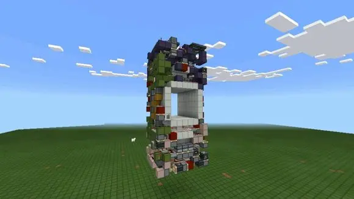
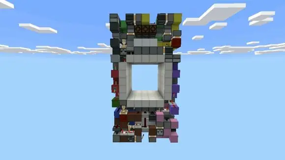
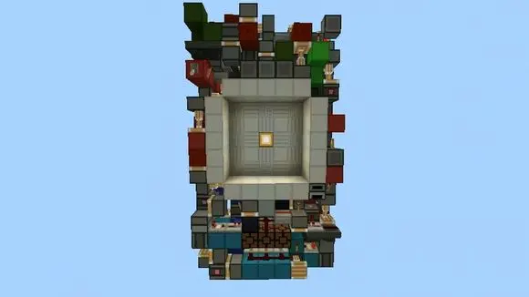
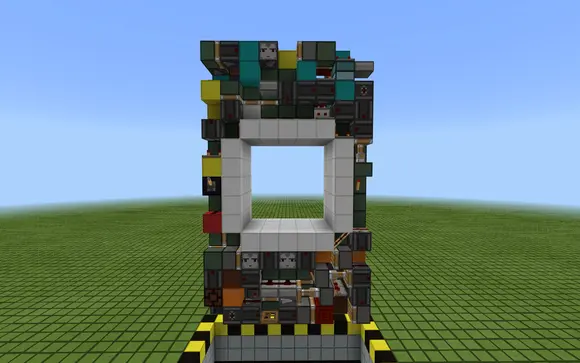
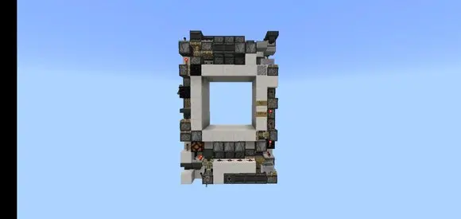
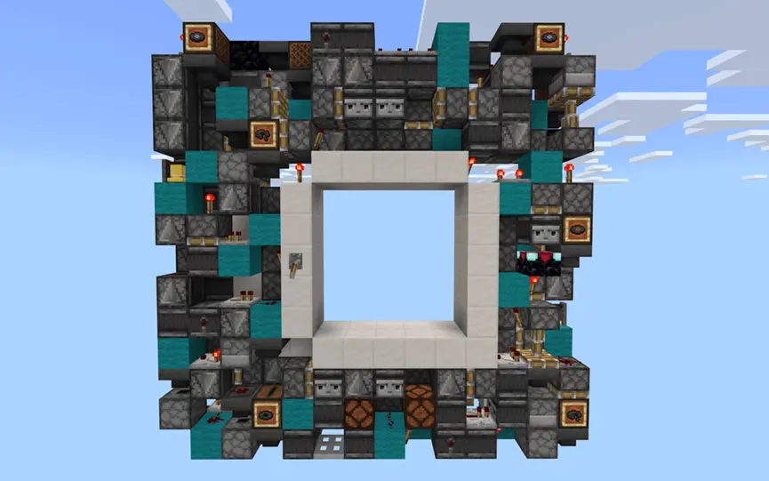
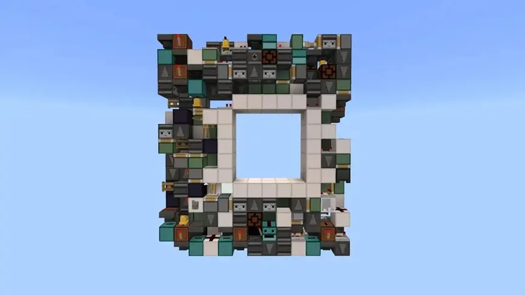
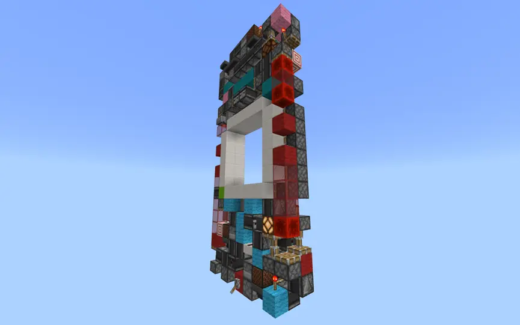

在下面收录的各个版本之前，是肯定有一些未被收录的版本，它们大多是年代久远或是已被删除无法查找，这里都是目前能被找到且比较经典有压缩性质的版本。
活塞在携带版0.15首次加入，2016/6/10发布正式版。在这个版本之前的械电作品全部是当年的一个活塞js(插件)制作的，故不收录。
发布时间：2016 /10/6
作者：jackiemly2001
体积：1386blocks
链接：http://tieba.baidu.com/p/4810352911?

发布时间：2017/1/27
作者：jackiemly2001/飞机博士35
视频：https://www.bilibili.com/video/BV1p64y1X7c7?p=3
体积：9x7x17=1071blocks
链接：https://tieba.baidu.com/p/4957350074?

发布时间：2017/3/12
作者：韩国478
体积：9x6x16=864blocks
链接：https://tieba.baidu.com/p/5018697954?
相同体积版本：http://tieba.baidu.com/p/5279579976?

发布时间：2017/3/?
作者：飞机博士35
体积：9x6x15=720blocks
视频：https://www.bilibili.com/video/BV1p64y1X7c7?p=2
链接：无
图片：无
发布时间：2017/?/?
作者：飞机博士35
体积：9x5x15=675blocks
视频：无
链接：无
图片：无
相同体积版本：https://tieba.baidu.com/p/5934201401?
ps:此体积当年玩家obg做过介绍视频，是一个划时代的版本。
发布时间：2018/?/?
作者：funian
体积：9x5x14=630blocks
视频：无
链接：无
图片：无
相同体积版本：https://tieba.baidu.com/p/5939965268?
发布时间：2018/?/?
作者：soshi02
体积：9x4x16=576blocks
视频：https://www.bilibili.com/video/BV1VW411A7K6?p=1
链接：待补充
图片：无
相同体积版本：https://tieba.baidu.com/p/5849345338?
发布时间：2018/8/26
作者：freedom
体积：9x4x15=540blocks
视频：无
链接：https://tieba.baidu.com/p/5855834787?

听说当时这个比funian的早了2个小时，真的惨。
发布时间：2018/8/26
作者：funian
体积：9x4x14=504blocks
视频：https://www.bilibili.com/video/BV19x4119754?p=1
链接：https://tieba.baidu.com/p/5855389948?

发布时间：2020/?/?
作者：soshi02
体积：420blocks
视频：待补充
链接：待补充
图片：待补充
发布时间：2020/3/30
作者：freedom/273
体积：14x2x14=392blocks
视频：无
链接：https://tieba.baidu.com/p/6584343833?

发布时间：2020/4/6
作者：freedom/273
体积13x2x15=390blocks
视频：无
链接：https://tieba.baidu.com/p/6600835460?

发布时间：2020/4/8
作者：soshi02/end#
体积：364blocks
视频：https://www.bilibili.com/video/BV1XK411L79p?p=1
链接：待补充
图片：待补充
发布时间：2020/8/23
作者：freedom/fx/fst
体积：9x2x20=360blocks
视频：https://www.bilibili.com/video/BV1dv411y7cQ?
链接：https://tieba.baidu.com/p/6900813361?

发布时间：2021/3/27
作者：273/freedom/fx/fst
体积：9x2x19=342blocks
图片：待补充
链接：网页链接
教程：https://www.bilibili.com/video/BV1vf4y1h7wZ?
https://www.bilibili.com/video/BV12U4y1P7Uf?
收录截止2021/3/?，此门种的竞技未必结束，单片时代也许会到来，让我们尽请期待新血液玩家们吧！